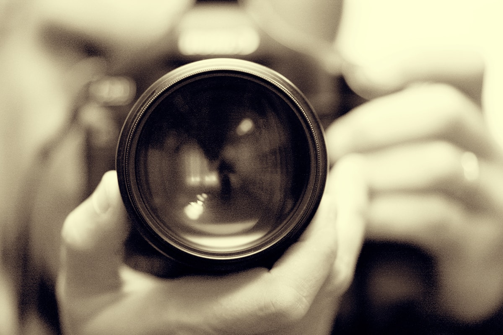

Kijk en voel bewust
Niet vanuit de alledaagsheid; zie en voel de schoonheid van dingen. Daar begint het mee; in een alledaagse stemming op pad gaan om te fotograferen werkt niet. Doe net of je een hele bijzondere reis maakt, ook al ben je in je eigen achtertuin!
